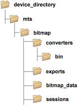

BFM Viewer-specific device folder structure
The Bit Fail Map Viewer expects a specific folder structure for the data it requires and produces.

Note The structure of the entire device directory is shown in Device directory structure.
The entire directory structure related to the Bit Fail Map Viewer is located in <device directory>/mts/bitmap/. This subdirectory contains the following folders:
- converters: Contains the library for interpreting the bit fail maps and
its source
- bin: Contains the compiled converter library
- exports: Contains images, filter, and ASCII bitmaps created by the BFM Viewer. This directory is automatically created when needed.
- bitmap_data: Contains the .bfd bit fail map data.
- sessions: Contains saved BFM Viewer sessions. This directory is automatically created when needed.
Some information (such as the .bfd bit fail map data) is required to reside in the expected directories, for some it is optional. We do, however, recommend that you store all data in the expected directories, for a smooth operation of the BFM Viewer.
Functional changes
- Introduced before SmarTest 6.3.2